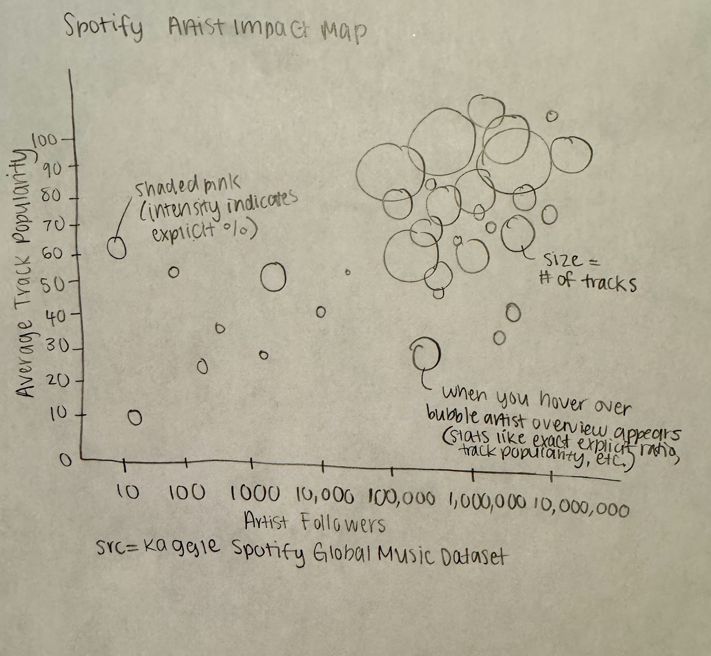

Hi, I'm Risha.
Who are you?
I'm an Informatics student at the University of Washington with interests in design, technology, and problem-solving.
What are you specializing at??
I'm specializing in Data Science.
What do you care about?
I care about creating accessible, user-centered solutions that are meaningful and impactful.
What interests you the most?
I'm most interested in bridging design thinking and technical execution to create real business impact.
Clock Narrative:
I chose to create a dancer poses clock because I love to dance and I’m on a dance team. I thought it would be a fun way to show time using different poses.
- Context: This clock is for dancers, and it could be used during practice to quickly tell the time by looking at the different poses.
- Design decisions: I used the legs and hands of the big dancer in the center so the poses are easy to read and the “clock hands” don’t overlap too much. I also used color to show which limbs are acting as the clock hands, and I made the hour hand thicker so it’s easier to distinguish from the minute hand. I included a key above the clock so users understand how to read it.
- Future work: In the future, I would design each pose to look more like the number it represents, so it’s easier to read at a quick glance. I would also clean up the big dancer design to look more visually appealing overall.
Clock Narrative:
I chose to create a progress ring clock to visually show the progression of time. The outer ring represents the hour, the middle ring represents the minute, and the inner ring represents the second.
- Context: This clock could be used by students or runners who want to quickly understand how time is progressing at a glance.
- Design decisions: I made each ring a different color so the different units of time are easy to distinguish from one another. I also included tick marks so users, such as runners, can count time more precisely if they want to.
- Future work: If I were to iterate on this clock, I would add additional rings for the day and year. I would also include text at the top to provide more detailed time information.
Clock Narrative:
I created a candle clock as a calming and relaxing way to tell time.
- Context: This clock is intended for students who are studying and want a more calming way to keep track of time while helping reduce stress.
- Design decisions: I used blue and yellow to represent AM and PM. I included markers along the candle so users can count time more precisely, while also adding text at the top so the time can be understood quickly at a glance.
- Future work: In the future, I would improve the overall visual appeal of the clock. The blue and yellow dots along the side of the candle were originally meant to represent melting wax to show the passage of time, and I would work on implementing that idea more clearly.
Why did you choose the dataset and story?
I chose this Spotify dataset from Kaggle because it allows me to analyze trends over time, compare artists and songs, and explore relationships between popularity and audience reach. The dataset includes a mix of track, artist, and album information from 2009–2025, including variables like artist popularity, artist follower count, and track popularity. This made it possible to compare artists by scale, popularity, and content.
Data source: Spotify Global Music Dataset (2009–2025) – Kaggle
Why did you choose that title for your story?
I called it “Spotify Artist Impact Map” because it maps artists into a shared space where their “impact” can be compared from multiple angles: followers (reach), popularity (mainstream success), and how much they appear in the dataset (bubble size). The word “map” also reflects that this isn’t a single ranking, but a layout that allows viewers to explore clusters and outliers.
Is the visualization author-driven or user-driven? What genre is it?
This visualization is mostly user-driven because the main interaction is hover, which allows viewers to choose which artist to inspect and see a summary of that artist’s data. There is no single fixed narrative path. Instead, the viewer drives what they explore. In terms of genre, it is an interactive bubble scatterplot that uses size and color as visual cues.
How would you walk someone through this visualization?
Each bubble represents an artist. The x-axis shows artist followers on a logarithmic scale, meaning artists with larger audiences appear farther to the right. The y-axis represents average track popularity, where higher values indicate that the artist’s tracks in the dataset are generally more popular. Bubble size indicates how many tracks from that artist appear in the dataset, so larger bubbles represent artists that dominate the data. Color uses a pink scale to show explicit ratio: lighter pink means fewer explicit tracks, while darker pink indicates a higher proportion of explicit songs.
Overall, the visualization shows that the dataset clusters around artists with large follower counts and mid-to-high popularity, while explicitness and track representation vary significantly. The largest bubbles highlight the most represented artists, and color reveals which artists skew more explicit.
Interviews and Observations
Interview 1
What they pointed out:
- The first interviewee immediately understood that it was a scatterplot and that bubbles represented artists.
- They noticed that the largest cluster appeared on the right side, indicating that most artists have high follower counts.
- They frequently used hover to inspect specific artists they recognized.
- They correctly interpreted darker pink as indicating more explicit content after referencing the legend.
Narrative they picked up:
“Most of these artists are mainstream, and a lot of the music is at least somewhat explicit, but not all of it.”
Interview 2
What they pointed out:
- They noticed bubble size first and asked if larger bubbles meant the artist appeared more often in the dataset.
- They appreciated the hover overview because it answered the question, “What am I looking at?”
- They said the log scale made sense but felt the numerical values looked “math-heavy” and weren’t immediately intuitive.
- They confirmed that the legend helped them understand the color pattern.
Narrative they picked up:
“This shows which artists show up the most in your dataset and how their popularity compares.”
What design principles guided your encoding choices?
I focused on readability and consistency. I used position to compare followers and popularity, size to represent frequency (track count), and color intensity to display explicit ratio. I also used a logarithmic scale for followers so that extremely popular artists wouldn’t overwhelm the chart and smaller artists would still be visible.
How did you ensure clarity, hierarchy, and memorability?
For clarity, I included axis labels, tick marks, and a legend placed outside the plot so it wouldn’t obscure the data. In terms of hierarchy, the title is most prominent, followed by a short explanation of how to read the visualization, and then the plot itself. Detailed artist information is revealed only on hover to avoid clutter. For memorability, the pink color scale makes explicitness stand out, while bubble size helps viewers remember which artists dominate the dataset. The hover interaction also helps connect abstract shapes to real artist names.
Sketches
Initial Sketch 1

Initial Sketch 2

Initial Sketch 3

Initial Sketch 4

Iterated Sketch
Explanation: After feedback from classmates, I decided to add interactivity for users through a hover feature. I also combined ideas from the initial sketches to create a clearer narrative from the dataset, focusing on comparing artists by popularity, audience reach, and explicit content.